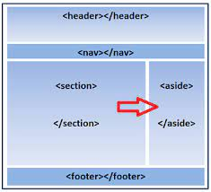

Este es un articulo
Guia de HTML
| Elemento | Descripcion | Ejemplo | Mas Informacion | ||||
|---|---|---|---|---|---|---|---|
| <html> | El elemento HTML <html> (o elemento HTML raiz) representa la raiz de un documento HTML. El resto de elementos descienden de este elemento. |
<!doctype html> |
Enlace | ||||
| <p> | El elemento <p> en HTML se utiliza para representar un párrafo de texto. El nombre "p" proviene de la palabra "paragraph" en inglés, que significa "párrafo" en español. Este elemento se utiliza para estructurar y dar formato al contenido textual en una página web. |
<p>Esto es un párrafo</p>Esto es un párrafo |
Enlace | ||||
| <input> | El elemento HTML <input> se usa para crear controles interactivos para formularios basados en la web con el fin de recibir datos del usuario. |
<input type="text" value="Type here" /> |
Enlace | ||||
| <div> | <div> de "division" -división . Sirve para crear secciones o agrupar contenidos. |
<div>h2p |
Enlace | ||||
| <h#> | Los elementos de encabezado implementan seis niveles de encabezado del documento, <h1> es el más importante, y <h6>, el menos importante. Un elemento de encabezado describe brevemente el tema de la sección que presenta. |
<h1>Heading level 1</h1>Heading level 1Heading level 2Heading level 3Heading level 4Heading level 5Heading level 6 |
Enlace | ||||
| <base> | El elemento HTML <base> en un documento. |
<head> |
Enlace | ||||
| <link> | El elemento HTML <link> especifica la relación entre el documento actual y un recurso externo. Los usos posibles de este elemento incluyen la definición de un marco relacional para navegación. Este elemento es más frecuentemente usado para enlazar hojas de estilos. |
<link href="style.css" rel="stylesheet" /> |
Enlace | ||||
| <meta> | <meta> de "metainformation" - metainformación. Sirve para aportar información sobre el documento. |
<meta name="copyright" content="© 2006 MDC"> |
Enlace | ||||
| <noscript> | <noscript> de -no script . Aporta contenidos alternativos al elemento script. las aplicaciones de usuario que no soporten scripts deben mostrar en su lugar el contenido de este elemento. |
<noscript> |
Enlace | ||||
| <script> | El elemento HTML Script <script> se utiliza para insertar o hacer referencia a un script ejecutable dentro de un documento HTML o XHTML. |
<script src="javascript.js"></script> |
Enlace | ||||
| <style> | <style> - estilo. Es el elemento encargado de indicar la información de estilo. |
<style type="text/css"> |
Enlace | ||||
| <title> | El elemento <title> HTML define el título del documento que se muestra en un browser la barra de título o la pestaña de una página. Solo contiene texto; las etiquetas dentro del elemento se ignoran. |
<title>Diario del festival de heavy metal de la abuela</title> |
Enlace | ||||
| <a> | El Elemento HTML Anchor <a> crea un enlace a otras páginas de internet, archivos o ubicaciones dentro de la misma página, direcciones de correo, o cualquier otra URL. |
<a href="https://www.mozilla.com/">Enlace externo</a> Enlace externo |
Enlace | ||||
| <abbr> | El elemento HTML <abbr> (o Elemento de Abreviación HTML) representa una abreviación o acrónimo; el atributo opcional title puede ampliar o describir la abreviatura. Si está presente, el atributo title debe contener la descripción completa y nada más. |
<p>I do <abbr title="Hypertext Markup Language">HTML</abbr></p> I do HTML |
Enlace | ||||
| <address> | El elemento HTML <address> aporta información de contacto para su <article> más cercano o ancestro <body>; en el último caso lo aplica a todo el documento. |
<address> You can contact author at www.somedomain.com |
Enlace | ||||
| <article> | El Elemento de HTML <article> representa una composición auto-contenida en un documento, una página, una aplicación o en un sitio, que se quiere que sea distribuíble y/o reutilizable de manera independiente, por ejemplo, en la redifusión. Algunos ejemplos podrían ser un mensaje en un foro, un artículo de una revista o un periódico, una entrada de blog, el comentario de un usuario, un widget o gadget interactivo, o cualquier otro elemento de contenido independiente. |
<article> |
Enlace | ||||
| <aside> | El elemento HTML <aside> representa una sección de una página que consiste en contenido que está indirectamente relacionado con el contenido principal del documento. Estas secciones son a menudo representadas como barras laterales o como inserciones y contienen una explicación al margen como una definición de glosario, elementos relacionados indirectamente, como publicidad, la biografía del autor, o en aplicaciones web, la información de perfil o enlaces a blogs relacionados. |
 | Enlace | ||||
| <audio> | El elemento <audio> en HTML se utiliza para incrustar contenido de audio, como música o efectos de sonido, en una página web. Permite a los usuarios reproducir, pausar y ajustar el volumen del audio directamente en la página. Se utiliza junto con el elemento <source> para especificar la fuente del archivo de audio y es altamente personalizable mediante atributos y eventos para adaptarse a las necesidades del desarrollador. |
<audio controls> |
Enlace | ||||
| <b> | Indica que el texto debe ser representado con una variable bold, o negrita,de la tipografía que se esté usando. Sus elementos son <b> y </b> |
<p> Esto es: <b> un elemento b </b></p>Esto es: un elemento b |
Enlace | ||||
| <bdo> | El elemento <bdo> en HTML se utiliza para especificar la dirección de escritura de texto en un fragmento de contenido, anulando la dirección de escritura predeterminada de la página. "bdo" significa "Bi-Directional Override" (anulación bidireccional) y se utiliza principalmente en situaciones donde el texto debe mostrarse en una dirección de escritura diferente a la de la página. |
<p>Este es un ejemplo de texto en español.</p> Este es un ejemplo de texto en español. هذا هو مثال على نص باللغة العربية. |
Enlace | ||||
| <bdi> | El elemento <bdi> en HTML, que significa "Bi-Directional Isolation" (Aislamiento Bi-direccional), se utiliza para encapsular una parte de texto dentro de una página web que debe mantener su dirección de escritura y formato, aislándola de la dirección de escritura y formato del texto circundante. Esto es especialmente útil cuando se trabaja con texto en idiomas que se escriben de derecha a izquierda (RTL) o con caracteres que tienen direcciones de escritura diferentes. |
<p>Texto en español.</p> Texto en español. نص باللغة العربية |
Enlace | ||||
| <blockquote> | El elemento <blockquote> en HTML se utiliza para citar un fragmento de texto de otra fuente dentro de tu página web. Este elemento es especialmente útil cuando deseas citar texto de un autor o fuente externa y deseas darle un formato especial para indicar que es una cita. |
<blockquote>
|
Enlace | ||||
| <br> | El elemento HTML line break <br> produce un salto de línea en el texto (retorno de carro). Es útil para escribir un poema o una dirección, donde la división de las líneas es significante. <br> No utilices <br> para incrementar el espacio entre líneas de texto; para ello utiliza la propiedad margin de CSS o el elemento <p>. |
Mozilla Foundation<br> Mozilla Foundation 1981 Landings Drive |
Enlace | ||||
| <button> | El elemento <button> en HTML se utiliza para crear un botón interactivo en una página web. Los botones son elementos fundamentales para crear formularios, activar acciones mediante JavaScript o llevar a cabo diversas acciones en una página web, como enviar formularios, abrir enlaces o realizar acciones específicas cuando se hace clic en ellos. |
<button type="button">Haz clic aquí</button> |
Enlace | ||||
| <canvas> | El elemento <canvas> en HTML es una etiqueta que se utiliza para crear gráficos, dibujos y animaciones en una página web utilizando JavaScript. Este elemento proporciona un lienzo en blanco en el cual puedes dibujar y renderizar gráficos de manera programática. |
<canvas id="miCanvas" width="400" height="200"></canvas> |
Enlace | ||||
| <cite> | El elemento <cite> en HTML se utiliza para marcar o citar el título de una obra o recurso, como un libro, una película, un artículo, una canción, etc., dentro de un párrafo de texto. Su propósito es proporcionar una indicación semántica de que el texto dentro de <cite> es una referencia a una fuente específica, como una cita o una obra mencionada. |
<p>En su famosa obra "<cite>El gran Gatsby</cite>," F. Scott Fitzgerald narra la vida de Jay Gatsby durante la década de 1920.</p> En su famosa obra "El gran Gatsby," F. Scott Fitzgerald narra la vida de Jay Gatsby durante la década de 1920. |
Enlace | ||||
| <code> | El elemento <code> en HTML se utiliza para marcar y formatear fragmentos de código fuente, ya sea código HTML, CSS, JavaScript u otros lenguajes de programación, dentro de una página web. El texto contenido dentro de <code> generalmente se muestra en una fuente monoespaciada (como Courier) y no se interpreta como HTML, lo que significa que los caracteres especiales se mostrarán tal como están, en lugar de ser interpretados como etiquetas HTML. |
<p>Para imprimir un mensaje en JavaScript, puedes usar el siguiente código:</p> Para imprimir un mensaje en JavaScript, puedes usar el siguiente código: console.log("Hola, mundo!"); |
Enlace | ||||
| <data> | El elemento <data> en HTML se utiliza para proporcionar un valor asociado con un texto descriptivo o legible por humanos. Este elemento permite incrustar datos que son legibles por máquinas en una página web y al mismo tiempo proporcionar una etiqueta descriptiva para los usuarios. |
<p>La temperatura actual es <data value="24">24 grados Celsius</data>.</p> La temperatura actual es 24 grados Celsius. |
Enlace | ||||
| <datalist> | El elemento HTML <datalist> contiene un conjunto de elementos <option> que representan los valores disponibles para otros controles. |
<label>Choose a browser from this list: <input list="browsers" name="myBrowser"/></label> |
Enlace | ||||
| <del> | El elemento <del> en HTML se utiliza para representar texto que ha sido eliminado o marcado como obsoleto o incorrecto en una página web. Puede ayudar a mostrar las revisiones o cambios en el contenido a lo largo del tiempo. |
<p>La versión anterior del producto era de <del>$100</del> $80.</p>La versión anterior del producto era de |
Enlace | ||||
| <details> | El elemento <details> en HTML se utiliza para crear un widget desplegable que permite a los usuarios mostrar o ocultar contenido adicional, como información detallada o instrucciones. Puede contener un elemento <summary> que actúa como el encabezado del widget y se muestra cuando el contenido está oculto. |
<details> Haz clic para obtener más informaciónEste es el contenido oculto. | Enlace | ||||
| <dfn> | El elemento <dfn> en HTML se utiliza para marcar una definición de un término o palabra dentro de un texto. Es especialmente útil en documentos técnicos o de referencia para resaltar y definir términos clave para los lectores. |
<p>El término se refiere a una palabra o frase específica.</p> El término se refiere a una palabra o frase específica. | Enlace | ||||
| <div> | El elemento <div> en HTML se utiliza para crear una división o contenedor genérico en una página web. No tiene un significado semántico específico, pero se utiliza para organizar y estructurar el contenido de la página y aplicar estilos y diseño mediante CSS. |
<div>Este es un contenedor genérico.</div> Este es un contenedor genérico.
| Enlace | ||||
| <dl> | El elemento <dl> en HTML se utiliza para crear una lista de descripción (listado de definiciones). Se compone de pares de términos y descripciones asociadas utilizando los elementos <dt> (término) y <dd> (descripción). |
<dl>
|
Enlace | ||||
| <em> | El elemento <em> en HTML se utiliza para enfatizar el texto, generalmente mostrándolo en cursiva. Indica que el contenido debe destacarse de manera que se transmita un énfasis o énfasis en el texto. |
<p>Este es un ejemplo de texto <em>enfatizado</em>.</p>
Este es un ejemplo de texto enfatizado. |
Enlace | ||||
| <fieldset> | El elemento <fieldset> en HTML se utiliza para agrupar y etiquetar elementos de formulario relacionados. Puede contener uno o varios elementos <input>, <textarea>, y otros elementos de formulario, junto con una etiqueta que describe el propósito del grupo. |
<fieldset>
|
Enlace | ||||
| <figure> | El elemento <figure> en HTML se utiliza para encapsular cualquier contenido que sea referenciado desde el contenido principal, como imágenes, gráficos, diagramas, videos, u otros elementos multimedia. Se utiliza junto con <figcaption> para proporcionar una descripción o título para el contenido encapsulado. |
<figure>

|
Enlace | ||||
| <footer> | El elemento <footer> en HTML se utiliza para representar el pie de una sección o contenedor, como el pie de una página web, el pie de un artículo o el pie de una sección. Contiene información de metadatos, derechos de autor, enlaces relacionados y otros elementos que pertenecen al pie de la página. |
<footer>
|
Enlace | ||||
| <form> | El elemento <form> en HTML se utiliza para crear un formulario en una página web. Puede contener varios elementos de entrada, como campos de texto, botones de opción, casillas de verificación y botones de envío, que permiten a los usuarios enviar datos al servidor para su procesamiento. |
<form action="procesar.php" method="post">
|
Enlace | ||||
| <header> | El elemento <header> en HTML se utiliza para representar la cabecera o encabezado de una sección o de toda la página. Contiene información introductoria o de navegación, como logotipos, títulos, menús y otros elementos relevantes para la parte superior de la página. |
<header>
Mi Sitio Web |
Enlace | ||||
| <hgroup> | El elemento <hgroup> en HTML se utilizaba anteriormente para agrupar varios elementos de encabezado, como <h1>, <h2>, etc., dentro de un solo grupo. Sin embargo, este elemento se considera obsoleto en HTML5 y se recomienda utilizar elementos de encabezado individuales para representar la estructura del encabezado. |
<hgroup>
Título PrincipalSubtítulo |
Enlace | ||||
| <hr> | El elemento <hr> en HTML se utiliza para crear una línea horizontal temática o divisoria en una página web. Se utiliza para separar contenido o secciones visuales, como párrafos, temas o bloques de información. |
<hr>
|
Enlace | ||||
| <i> | El elemento <i> en HTML se utilizaba tradicionalmente para representar texto en cursiva. Sin embargo, en HTML5, se recomienda utilizar elementos semánticos apropiados, como <em> o <strong>, para proporcionar significado y contexto al texto en lugar de utilizar <i> únicamente para la presentación visual en cursiva. |
<p>Este es un ejemplo de texto <i>en cursiva</i>.</p>
Este es un ejemplo de texto en cursiva. |
Enlace | ||||
| <iframe> | El elemento <iframe> en HTML se utiliza para incrustar otro documento HTML dentro de la página actual. Puede ser utilizado para mostrar contenido de sitios web externos, mapas, videos, y más, en una ventana dentro de la página principal. |
<iframe src="https://www.ejemplo.com" width="600" height="400"></iframe>
|
Enlace | ||||
| <img> | El elemento <img> en HTML se utiliza para mostrar imágenes en una página web. Debes proporcionar la URL de la imagen en el atributo src para que se muestre en la página. También puedes agregar atributos opcionales, como alt para texto alternativo y width y height para el tamaño de la imagen. |
<img src="imagen.jpg" alt="Descripción de la imagen" width="300" height="200">
|
Enlace | ||||
| <input> | El elemento <input> en HTML se utiliza para crear campos de entrada en formularios. Puede tomar varios tipos, como texto, contraseña, casilla de verificación, radio, botón y más, dependiendo del valor del atributo type. Los usuarios pueden ingresar datos en estos campos para enviar al servidor. |
<input type="text" id="nombre" name="nombre" value="">
|
Enlace | ||||
| <ins> | El elemento <ins> en HTML se utiliza para representar texto o contenido que ha sido insertado en un documento o página web. Puede ser útil en contextos como seguimiento de cambios o revisiones en documentos. |
<p>El producto <ins>nuevo</ins> está disponible ahora.</p>
El producto nuevo está disponible ahora. |
Enlace | ||||
| <kbd> | El elemento <kbd> en HTML se utiliza para representar el texto que el usuario debe ingresar desde el teclado, como comandos de teclado, combinaciones de teclas o atajos de teclado. |
<p>Presiona <kbd>Ctrl + C</kbd> para copiar el texto.</p>
Presiona Ctrl + C para copiar el texto. |
Enlace | ||||
| <label> | El elemento <label> en HTML se utiliza para asociar un texto descriptivo con un elemento de formulario. Esto mejora la accesibilidad y la usabilidad de los formularios, ya que los usuarios pueden hacer clic en el texto del <label> para seleccionar o enfocar el campo de entrada correspondiente. |
<label for="nombre">Nombre:</label>
|
Enlace | ||||
| <main> | El elemento <main> en HTML se utiliza para representar el contenido principal de una página web. Debe haber un único elemento <main> en cada documento HTML, y su contenido debe ser relevante y único para la página. |
<main>
Título PrincipalEste es el contenido principal de la página. |
Enlace | ||||
| <map> | El elemento <map> en HTML se utiliza junto con el elemento <area> para crear mapas de imágenes interactivos. Puedes definir áreas sensibles en una imagen y asignarles enlaces o acciones específicas. |
<img src="plano.png" usemap="#planomap">

|
Enlace | ||||
| <mark> | El elemento <mark> en HTML se utiliza para resaltar o marcar parte del texto dentro de un párrafo o una sección de contenido. Esto puede ser útil para resaltar términos de búsqueda o información relevante. |
<p>Este es un texto de ejemplo y <mark>esto está resaltado</mark>.</p>
Este es un texto de ejemplo y esto está resaltado. |
Enlace | ||||
| <math> | El elemento <math> en HTML se utiliza para representar contenido matemático, como fórmulas, ecuaciones y notación matemática. Puede contener elementos como <mrow>, <msup>, <msqrt>, entre otros, para estructurar expresiones matemáticas. |
<math xmlns="http://www.w3.org/1998/Math/MathML">
|
Enlace | ||||
| <menu> | El elemento <menu> en HTML se utiliza para definir una lista de comandos o enlaces de menú que los usuarios pueden seleccionar. Es útil en aplicaciones web para crear menús desplegables o barras de menú. |
<menu type="toolbar">
|
Enlace | ||||
| <meter> | El elemento <meter> en HTML se utiliza para representar una medida escalar dentro de un rango conocido o un valor fraccional, como puntajes, calificaciones, o medidores de progreso. Puedes definir el valor mínimo y máximo, así como el valor actual dentro de ese rango. |
<meter value="70" min="0" max="100">70%</meter>
|
Enlace | ||||
| <nav> | El elemento <nav> en HTML se utiliza para definir una sección de navegación en una página web. Usualmente contiene enlaces de navegación, como menús o barras de navegación, que permiten a los usuarios acceder a diferentes partes del sitio web. |
<nav>
|
Enlace | ||||
| <noscript> | El elemento <noscript> en HTML se utiliza para proporcionar contenido alternativo que se mostrará si los scripts no están habilitados en el navegador del usuario. Esto es útil para garantizar que el contenido sea accesible para todos los usuarios, incluso aquellos que no pueden ejecutar scripts. |
<noscript>Debes habilitar JavaScript para ver esta página.</noscript>
|
Enlace | ||||
| <object> | El elemento <object> en HTML se utiliza para incrustar objetos multimedia, como videos, audio, applets de Java o contenido interactivo en una página web. Puede contener atributos para especificar la fuente del objeto y su tipo. |
<object data="video.mp4" width="320" height="240"> </object>
|
Enlace | ||||
| <ol> | El elemento <ol> en HTML se utiliza para crear listas ordenadas, donde cada elemento de la lista se numera automáticamente en orden ascendente. Puedes anidar elementos <li> dentro de <ol> para crear una lista jerárquica. |
<ol>
|
Enlace | ||||
| <output> | El elemento <output> en HTML se utiliza para mostrar resultados de cálculos o scripts. Puedes asociarlo a elementos de entrada para mostrar resultados en tiempo real, como en calculadoras en línea. |
<label for="num1">Número 1:</label>
|
Enlace | ||||
| <p> | El elemento <p> en HTML se utiliza para definir un párrafo de texto. Es uno de los elementos de bloque más comunes y se utiliza para estructurar el contenido textual en párrafos separados. |
<p>Este es un párrafo de ejemplo.</p>
Este es un párrafo de ejemplo. |
Enlace | ||||
| <picture> | El elemento <picture> en HTML se utiliza para definir múltiples recursos de imagen y permitir al navegador seleccionar la mejor opción según el contexto y las capacidades del dispositivo del usuario. Esto es útil para la adaptación de imágenes en sitios web responsivos. |
<picture>

|
Enlace | ||||
| <pre> | El elemento <pre> en HTML se utiliza para mostrar texto preformateado, como código fuente o texto con espacios y saltos de línea. El texto dentro de <pre> se muestra con una fuente de ancho fijo, lo que preserva el formato y la disposición original del texto. |
<pre>function saludar() {
function saludar() {
console.log("¡Hola, mundo!");
}
saludar();
|
Enlace | ||||
| <progress> | El elemento <progress> en HTML se utiliza para mostrar el progreso de una tarea, como la carga de una página o la realización de una operación en un formulario. Puedes especificar el valor actual y máximo para indicar el progreso. |
<progress value="50" max="100">50% completado</progress>
|
Enlace | ||||
| <q> | El elemento <q> en HTML se utiliza para marcar una cita en línea, es decir, una cita corta que se encuentra dentro del texto principal y generalmente se rodea de comillas. Los navegadores suelen agregar automáticamente las comillas. |
<p>Einstein dijo: <q>La imaginación es más importante que el conocimiento.</q></p>
Einstein dijo: |
Enlace | ||||
| <ruby> | El elemento <ruby> en HTML se utiliza para mostrar texto con anotaciones de ruby, que son pequeños caracteres o símbolos que se colocan sobre o al lado del texto principal, comúnmente utilizado en lenguajes como el japonés o el chino. |
<ruby>東京<rp> (</rp><rt>Tōkyō</rt><rp>) </ruby>
東京 |
Enlace | ||||
| <s> | El elemento <s> en HTML se utiliza para representar texto que es inexacto o irrelevante en un contexto particular, pero que se mantiene por razones históricas o para mantener el registro completo del contenido. El texto se muestra tachado por lo general. |
<s>Texto obsoleto</s>
|
Enlace | ||||
| <samp> | El elemento <samp> en HTML se utiliza para representar texto que es una muestra de salida de un programa de computadora o de otro tipo de datos. Este texto se muestra en una fuente de ancho fijo y generalmente en negrita. |
<p>El resultado de <samp>echo "Hola, mundo"</samp> es "Hola, mundo".</p>
El resultado de echo "Hola, mundo" es "Hola, mundo". |
Enlace | ||||
| <script> | El elemento <script> en HTML se utiliza para incrustar o referenciar código JavaScript en una página web. Puedes colocarlo en la sección <head> o al final del <body> para ejecutar scripts. |
<script>
|
Enlace | ||||
| <section> | El elemento <section> en HTML se utiliza para dividir el contenido de una página web en secciones temáticas o grupos relacionados de contenido. Ayuda a organizar y estructurar el contenido de la página de manera semántica. |
<section>
|
Enlace | ||||
| <select> | El elemento <select> en HTML se utiliza para crear listas desplegables, donde los usuarios pueden seleccionar una opción de una lista de elementos. Se combina con elementos <option> que representan las opciones disponibles. |
<select>
|
Enlace | ||||
| <small> | El elemento <small> en HTML se utiliza para representar texto con un tamaño de fuente más pequeño y a menudo se usa para mostrar notas legales, créditos de derechos de autor u otro contenido secundario. |
<p>Copyright © 2023 <small>Mi Empresa</small></p>
Copyright © 2023 Mi Empresa |
Enlace | ||||
| <span> | El elemento <span> en HTML se utiliza para aplicar estilos o scripts a una parte específica del texto dentro de un elemento HTML más grande. Se utiliza cuando no hay un elemento semántico más adecuado disponible. |
<p>Este es un <span style="color: blue;">texto azul</span> en un párrafo.</p>
Este es un texto azul en un párrafo. |
Enlace | ||||
| <strong> | El elemento <strong> en HTML se utiliza para dar énfasis fuerte al texto y, por lo general, se muestra en negrita. Se utiliza para resaltar palabras o frases importantes en el contenido. |
<p>Este es un <strong>texto importante</strong> en un párrafo.</p>
Este es un texto importante en un párrafo. |
Enlace | ||||
| <sub> | El elemento <sub> en HTML se utiliza para representar texto o números subíndice, que generalmente se utilizan en fórmulas químicas, ecuaciones matemáticas o notas a pie de página. |
<p>H<sub>2</sub>O es la fórmula del agua.</p>
H2O es la fórmula del agua. |
Enlace | ||||
| <sup> | El elemento <sup> en HTML se utiliza para representar texto o números sobrescrito, que también se utilizan en fórmulas matemáticas, exponentes y notas a pie de página. |
<p>2<sup>3</sup> es igual a 8.</p>
23 es igual a 8. |
Enlace | ||||
| <svg> | El elemento <svg> en HTML se utiliza para incrustar gráficos vectoriales escalables (SVG) en una página web. Los gráficos SVG se pueden escalar a diferentes tamaños sin perder calidad. |
<svg width="100" height="100">
|
Enlace | ||||
| <table> | El elemento <table> en HTML se utiliza para crear tablas en una página web. Las tablas constan de filas (<tr>), columnas (<td>), encabezados de columna (<th>) y otros elementos para estructurar y mostrar datos tabulares. |
<table>
|
Enlace |
Guia de CSS
| Elemento | Descripcion | Ejemplo | Mas Informacion |
|---|---|---|---|
| color: ; | Color de la letra | color: red;Este es un ejemplo |
Enlace |
Guia de JS
| Elemento | Descripcion | Ejemplo | Mas Informacion |
|---|---|---|---|
| var | Declara una variable, opcionalmente la inicia a un valor. | var x = 5 |
Enlace |